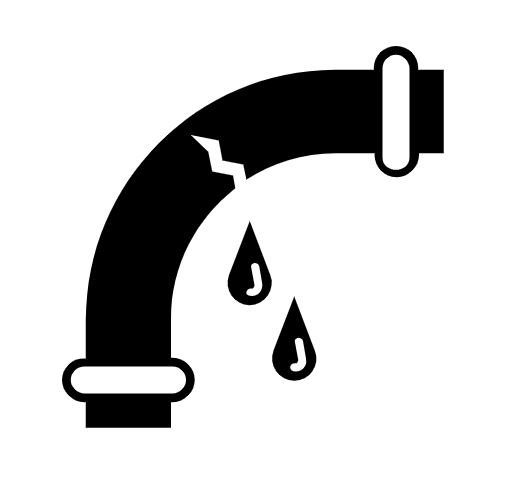

home
about
our team
final product
contact
Use this interactive map to locate Port Hope
- Toggle rainfall amounts to see areas at risk along the pipe network
- Click links below for more details on our projcts and to see AcGIS Web Applications
read more
Risk Analysis
Rainfall Predictions

Updated PACP Values and Cartographic Outputs